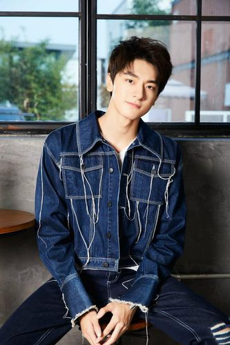

中国内地新生代实力演员--林一
林一，1999年1月11日出生于河北省，中国内地影视男演员，就读于北京体育大学国标舞专业。2015年，签约唐人影视。2016年利用暑假的时间到国外接受了专业的舞蹈和表演培训。2017年参加青春校园网络剧《你好，旧时光》选角活动，试镜男主角林杨，同年，作为固定嘉宾参加优酷视频偶像养成类节目《美少年学社》；12月，其出演的科幻电影《希望岛》正式开机，从而正式以演员身份正式进入演艺圈。
林一具有超高的颜值和清新的气质，是一个面容清秀，线条清晰，拥有王子般外表的暖梦大男孩。林一在《美少年学社》节目中的表现可圈可点，他的演技也得到了认可。林一还是一个很有时尚品味的男生，在《疯狂衣橱》节目中，颜值与时尚感兼备的他不仅丝毫不露怯，而且气场还很强大举手投足间颇有“大模”范。此外在一组时尚写真中，身穿白色毛衣的他，展现出慵懒随性的一面，更显迷人魅力。
演艺经历
2017年，与唐国强、蔡国庆、龚琳娜、菅原小春、撒贝宁等录制综艺节目《美少年学社》。 2017年，参加青春校园网络剧《你好，旧时光》选角活动，与赵顺然、蔡徐坤一同试镜男主角林杨；同年，作为固定嘉宾参加优酷视频偶像养成类节目《美少年学社》，从专业能力到艺人修养进行了全方位的训练；11月，参加优酷视频时尚综艺节目《疯狂衣橱》，以41票的成绩获得第6期冠军；12月，与段奕宏、安迪·加西亚、凤小岳共同出演的科幻电影《希望岛》正式开机，这是他首次触电大银幕，从而正式以演员身份进入演艺圈。 2018年8月9日，与邢菲、唐晓天、郑英辰合作主演改编自赵乾乾同名小说的青春爱情剧《致我们暖暖的小时光》在浙江宁波开机，在剧中饰演顾未易。
爱生活
爱林一